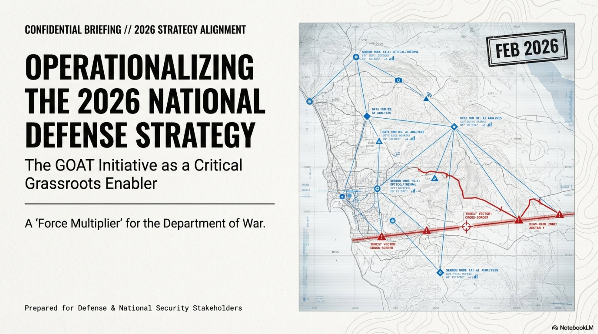
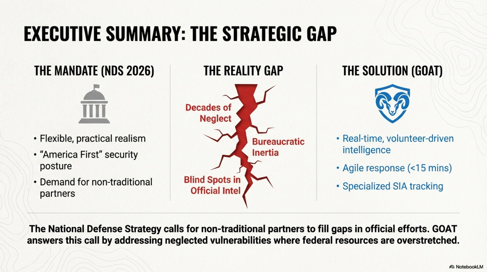
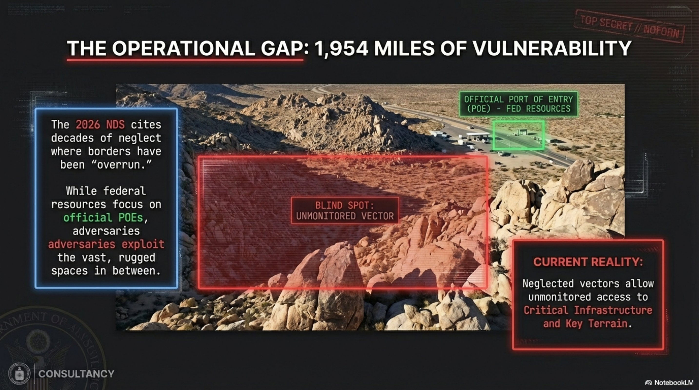
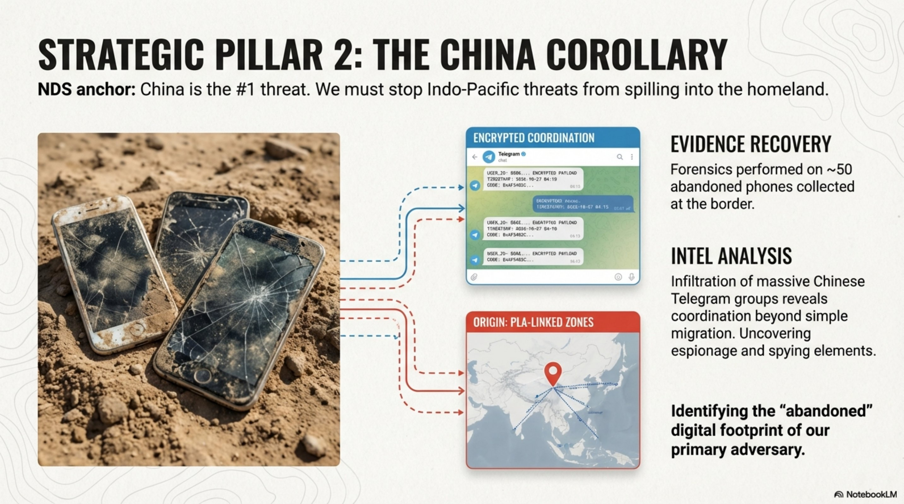
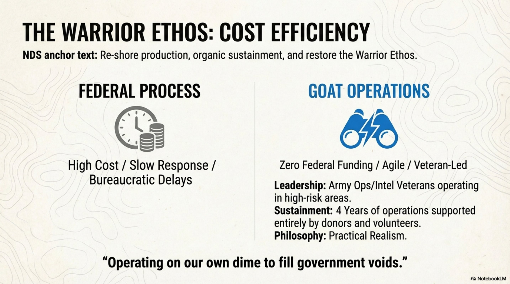

🛡
INTEL PORTAL
Intel Reports
TGI Capabilities
2026 NDS Alignment
Logout
CLASSIFIED // STRATEGIC ALIGNMENT BRIEFING
DOC-NDS-2026-001
GOAT Initiative Strategic Overview — NDS Alignment
FEB 2026
CLASSIFIED
SLIDE 01

SLIDE 02

SLIDE 03
SLIDE 04

SLIDE 05

SLIDE 06
SLIDE 07
SLIDE 08

SLIDE 09
SLIDE 10
END OF BRIEFING
SECURE VIEWER ACTIVE — CLASSIFIED
SLIDE 01 / 10